청소년상담사-1급(2교시) (2018-10-06 기출문제)
1과목: 비행상담
1. 학교 밖 청소년 지원에 관한 법령상 ‘학교 밖 청소년’에 해당하지 않는 것은?
- 취학의무를 유예한 청소년
- 고등학교에 입학한 후 2개월간 결석한 청소년
- 고등학교에 진학하지 아니한 청소년
- 고등학교에서 제적ㆍ퇴학처분을 받은 청소년
- 고등학교에서 자퇴한 청소년
(정답률: 알수없음)

2. 가해학생 대상 집단상담 프로그램에서 다룰 수 있는 내용을 모두 고른 것은?
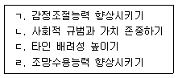
- ㄱ, ㄷ
- ㄴ, ㄹ
- ㄱ, ㄴ, ㄷ
- ㄴ, ㄷ, ㄹ
- ㄱ, ㄴ, ㄷ, ㄹ
(정답률: 알수없음)
3. 소년법상 소년부의 보호사건으로 심리하는 대상을 모두 고른 것은?
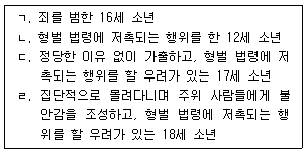
- ㄱ, ㄴ
- ㄷ, ㄹ
- ㄱ, ㄴ, ㄷ
- ㄴ, ㄷ, ㄹ
- ㄱ, ㄴ, ㄷ, ㄹ
(정답률: 알수없음)
4. 지역사회의 청소년상담 지원 자원 중 성격이 다른 것은?
- 또래상담자 동아리
- 대학생 멘토단
- 전문직자원봉사회
- 지방자치단체 운영위원회
- 상담자원봉사회
(정답률: 알수없음)
5. 청소년기에 발생할 수 있는 싸움, 괴롭히기(왕따), 부정행위(cheating) 및 다른 반사회적 행위들의 발생가능성 평가에 유용한 도구는?
- AUDIT
- PCL:YV
- ERA-20
- LSI-R
- SARA
(정답률: 알수없음)
6. 공격성 수준이 높은 비행청소년과 관련 있는 요인이 아닌 것은?
- 전두엽의 기능 저하
- 뇌신경계의 기능장애
- 극적인 행동추구경향
- 낮은 테스토스테론 수준
- 낮은 세로토닌 수준
(정답률: 알수없음)
7. 청소년 비행을 내용에 따라 분류할 때 지위비행에 해당하는 것은?
- 약물복용, 게임중독 등의 현실도피적 행위
- 음주 등 성인에게는 허용되나 청소년이기 때문에 일탈행동으로 간주될 수 있는 행위
- 폭행 등 타인의 신체에 위해를 가하는 행위
- 성매매 등 건강한 성 발달을 저해하는 부적절한 행위
- 절도, 갈취와 같이 타인에게 경제적 손해를 입히는 행위
(정답률: 알수없음)
8. 학교폭력예방 및 대책에 관한 법령상 가해학생에 대한 우선 출석정지 조치에 관한 설명으로 옳지 않은 것은?
- 가해학생에 대한 우선 출석정지를 조치할 수 있는 사람은 교육감이다.
- 2명 이상의 학생이 고의적ㆍ지속적으로 폭력을 행사한 경우 조치할 수 있다.
- 학교폭력을 행사하여 전치 2주 이상의 상해를 입힌 경우 조치할 수 있다.
- 학교폭력에 대한 신고, 진술, 자료제공 등에 대한 보복을 목적으로 폭력을 행사한 경우 조치 할 수 있다.
- 피해학생을 가해학생으로부터 긴급하게 보호할 필요가 있다고 판단하는 경우 조치할 수 있다.
(정답률: 알수없음)
9. 사회정보처리모델에서 문제행동을 보이는 청소년에 관한 설명으로 옳은 것은?
- 일반 청소년보다 과거 경험, 특히 즐거운 경험을 잘 기억한다.
- 일반 청소년보다 더 많은 수의 사회적 단서를 이용한다.
- 일반 청소년보다 자신이 선택한 반응의 결과를 우호적으로 평가하는 경향이 있다.
- 사회정보처리과정은 사회적 단서의 해석, 적절한 반응 선택, 행동 등 3단계로 나타난다.
- 애매한 상황에서 발생한 부정적 결과의 책임을 자기에게 돌리는 경향이 있다.
(정답률: 알수없음)
10. 브론펜브레너(U. Bronfenbrenner)의 생태학적 관점에서 학교폭력의 원인에 관한 설명으로 옳지 않은 것은?
- 개인: 학교폭력 가해학생의 공격 성향이 높다.
- 미시체계: 가해학생의 아버지가 자녀에 대해 무관심한 경향이 높다.
- 중간체계: 가해학생의 어머니가 자녀의 친구관계에 대해 모르는 경향이 높다.
- 외체계: 전문상담교사가 없거나 부족한 것이 학교폭력의 원인이다.
- 거시체계: 입시위주의 교육은 학교폭력을 더욱 심각하게 하는 경향이 있다.
(정답률: 알수없음)
11. 최근 학교폭력의 특징에 해당하지 않는 것은?
- 무절제한 향락성
- 집단가해현상
- 저연령화 경향
- 피해와 가해의 중복경험
- 사이버 폭력의 심각성 증가
(정답률: 알수없음)
12. 지역사회청소년통합지원체계(CYS-Net)에 관한 설명으로 옳지 않은 것은?
- 청소년보호법에 법적 근거를 두고 있다.
- 추진배경은 위기청소년을 위한 맞춤형ㆍ원스톱 연계서비스 강화체제 구축이었다.
- 지방자치단체는 CYS-Net을 구축ㆍ운영하여야 한다.
- 필수연계기관에는 학교ㆍ교육청, 경찰관서, 보건소 등이 포함된다.
- 학업중단청소년의 학업복귀와 사회진입을 위한 지원 사업이 활성화되었다.
(정답률: 알수없음)
13. ( )에 들어갈 내용이 순서대로 옳게 나열된 것은?
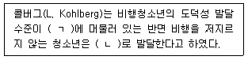
- ㄱ: 전인습적 단계, ㄴ: 인습적 단계
- ㄱ: 인습적 단계, ㄴ: 후인습적 단계
- ㄱ: 사회적 계약 지향 단계, ㄴ: 개인적 양심원리의 도덕성 단계
- ㄱ: 착한 소년소녀 지향단계, ㄴ: 벌과 복종 중심의 단계
- ㄱ: 합법적인 규칙을 따르는 단계, ㄴ: 자신의 윤리원리 단계
(정답률: 알수없음)
14. 학교폭력 상황에서 다음과 같은 행동을 보이는 주변인 유형은?
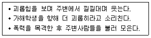
- 동조자(assistant)
- 강화자(reinforcer)
- 방관자(outsider)
- 방어자(defender)
- 가해자(offender)
(정답률: 알수없음)
15. 학교폭력 관련 요인 중 동조성에 관한 설명으로 옳지 않은 것은?
- 신념ㆍ태도ㆍ가치관이 비슷한 또래가 집단형성 경향이 강하다.
- 가해자를 지지하는 집단은 누군가 왕따를 시작했을 때 동조경향이 강하게 나타난다.
- 안정적ㆍ배타적 또래집단이 되면서 소속감, 지지 및 수용을 제공하는 긍정적 기능을 하게 된다.
- 집단압력에 대한 동조현상은 학교폭력의 집단화를 감소시킨다.
- 동조성 강도는 집단행동이나 응집성 정도에 비례한다.
(정답률: 알수없음)
16. 다음 진술과 관련된 이론에서 주장하는 비행 대책이 아닌 것은?
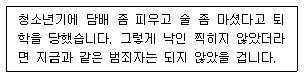
- 비범죄화
- 탈시설화
- 전환제도
- 공정한 절차
- 탈수치심화
(정답률: 알수없음)
17. 다음에서 청소년 비행의 원인을 설명하는 이론은?
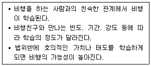
- 긴장이론
- 사회해체이론
- 사회통제이론
- 차별접촉이론
- 갈등이론
(정답률: 알수없음)
18. 아동ㆍ청소년의 성보호에 관한 법률에서 처벌 기준이 맞는 것은?
- 폭행 또는 협박으로 아동ㆍ청소년을 강간한 사람은 무기징역 또는 10년 이상의 유기징역에 처한다.
- 아동ㆍ청소년이용음란물을 제작ㆍ수입 또는 수출한 자는 10년 이상의 유기징역에 처한다.
- 아동ㆍ청소년의 성을 사는 행위를 한 자는 3년 이상 10년 이하의 징역 또는 5천만원 이상의 벌금에 처한다.
- 폭행이나 협박으로 아동ㆍ청소년으로 하여금 아동ㆍ청소년의 성을 사는 행위의 상대방이 되게 한 자는 5년 이상의 유기징역에 처한다.
- 아동ㆍ청소년의 성을 사는 행위의 장소를 제공하는 행위를 업으로 하는 자는 5년 이상의 유기징역에 처한다.
(정답률: 알수없음)
19. 범죄행동에 대해 다음과 같은 특징을 보이는 경우는?
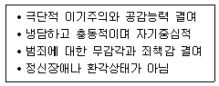
- 사이코패시(psychopathy)
- 사회불안장애
- 양극성장애
- 주요우울장애
- 조현병
(정답률: 알수없음)
20. 다음 중 A군과의 첫 회기 상담 시 청소년상담사의 적절한 개입은?
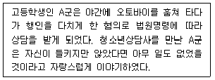
- 행동의 원인 분석하기
- 문제행동 명료화하기
- 양육태도와 문제행동의 연관성 설명하기
- 상담에 대한 기대 확인 및 감정 반영하기
- 빈 의자 기법 사용하기
(정답률: 알수없음)
21. 패링턴(D. Farrington)의 청소년 비행가능성 위험요인에 해당하는 것을 모두 고른 것은?
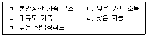
- ㄱ, ㄴ
- ㄱ, ㄷ, ㅁ
- ㄴ, ㄷ, ㄹ
- ㄱ, ㄴ, ㄹ, ㅁ
- ㄱ, ㄴ, ㄷ, ㄹ, ㅁ
(정답률: 알수없음)
22. 청소년상담사의 상담활동 중 ‘찾아가는 상담’에서 지켜야 할 사항에 해당하는 것은?
- 찾아가는 장소와 시간 확보는 미리 하지 않는다.
- 첫 방문 시 내담자 정보보호를 위해 반드시 혼자 방문한다.
- 찾아가는 상담 회기를 마친 후 그 결과를 기관 상급자에게 보고한다.
- 청소년 밀집지역 등으로 이동하여 상담할 때 경찰이나 청소년지도요원과의 협업 없이 상담을 진행한다.
- 대상 청소년의 소속 학교 등 기관 방문을 하는 경우 사전에 청소년과 협의하지 않는다.
(정답률: 알수없음)
23. 사이버 폭력의 특징을 모두 고른 것은?
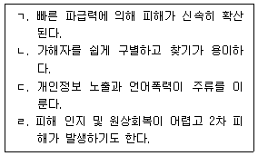
- ㄱ, ㄴ, ㄷ
- ㄱ, ㄴ, ㄹ
- ㄱ, ㄷ, ㄹ
- ㄴ, ㄷ, ㄹ
- ㄱ, ㄴ, ㄷ, ㄹ
(정답률: 알수없음)
24. 다음 중 B씨의 행동을 설명할 수 있는 개념은?
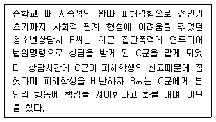
- 주지화
- 역전이
- 자기개방
- 무조건적 수용
- 공감적 이해
(정답률: 알수없음)
25. 다음에서 청소년 비행을 설명하는 이론은?
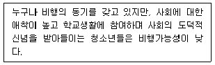
- 정신분석이론
- 행동주의이론
- 사회유대이론
- 일반긴장이론
- 생태학적 이론
(정답률: 알수없음)
2과목: 성상담
26. 청소년의 자아존중감과 성행동의 관계에 관한 설명으로 옳은 것은?
- 자아존중감이 높을수록 전통에 대한 수용이 높아 성적 욕구에 대한 탐색이 낮다.
- 자아존중감이 낮을수록 신체이미지 불만족이 높아지는 현상은 여자청소년들에게만 나타난다.
- 자아존중감이 낮을수록 위험 감수능력이 떨어지기 때문에 위험 성행동을 할 가능성이 낮아진다.
- 자아존중감이 높을수록 죄책감이 낮아져서 이른 나이에 성행동을 할 가능성이 높아진다.
- 자아존중감이 낮을수록 성행동에서 만족감을 경험할 가능성이 낮아진다.
(정답률: 알수없음)
27. 성 역사에서 시기와 내용의 연결이 옳은 것은?
- 1930년대: 라텍스의 발명으로 최초의 콘돔 등장
- 1950년대: 킨제이(A. Kinsey) 연구로 동성애가 정신장애에서 제외됨
- 1960년대: 경구피임약 개발로 성 개방 시대가 열림
- 1990년대: 에이즈(AIDS) 공포로 성태도가 1960년대 이전으로 회귀
- 2000년대: ‘비아그라’ 시판으로 제2의 성 개방 시대가 열림
(정답률: 알수없음)
28. 리(J. Lee)의 사랑유형에 관한 설명으로 옳은 것은?
- 사랑유형이 다를 때 상호보완적이 되어 만족감이 높다.
- 경험적 연구에서 사랑유형과 정신건강 간의 관련성이 확인되었다.
- 리 자신이 상담한 사례를 분석하여 유형을 확인했다.
- 소유애 유형은 상대에 몰두하기 때문에 감정이 매우 안정적이다.
- 실용애 유형은 청소년기에는 나타나지 않는다.
(정답률: 알수없음)
29. 중학교 2학년 남학생의 고민에 대한 상담자의 개입과 반응으로 옳은 것을 모두 고른 것은?
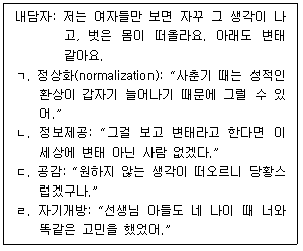
- ㄱ, ㄴ
- ㄱ, ㄷ
- ㄴ, ㄷ
- ㄷ, ㄹ
- ㄱ, ㄷ, ㄹ
(정답률: 알수없음)
30. 성교 전파성 질병과 그 증상으로 옳은 것을 모두 고른 것은?
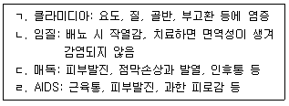
- ㄱ, ㄴ
- ㄱ, ㄷ
- ㄴ, ㄷ
- ㄱ, ㄴ, ㄹ
- ㄱ, ㄷ, ㄹ
(정답률: 알수없음)
31. 인간의 성욕에 관한 설명으로 옳지 않은 것은?
- 생물학적 접근: 인간 성행위는 타고난 것으로 사회적, 심리적 영향을 받는 것이 아니다.
- 정신분석학적 접근: 리비도가 활동하는 성감대가 남근기에 최초로 출현한다.
- 진화심리학적 접근: 성욕을 충족시키는 방식이 생물학적 적응원리로 결정된다.
- 사회학적 접근: 성욕에 미치는 사회적 영향에 관심을 둔다.
- 여성주의 접근: 권력구조 관점에서 성욕을 설명한다.
(정답률: 알수없음)
32. 남녀의 주요 내ㆍ외부 생식기관에 관한 설명으로 옳은 것을 모두 고른 것은?
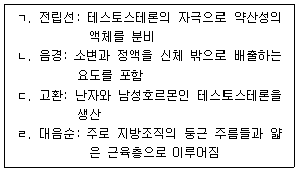
- ㄱ, ㄴ
- ㄱ, ㄹ
- ㄴ, ㄷ
- ㄴ, ㄹ
- ㄱ, ㄷ, ㄹ
(정답률: 알수없음)
33. 성폭력에 관한 설명으로 옳지 않은 것은?
- 상대방의 의사를 고려하지 않거나 정서적 불쾌감 등을 주는 모든 성적 언동을 말한다.
- 사회적 지위와 관계없이 누구에게나 일어날 수 있다.
- 아는 사람보다는 낯선 사람에 의해 발생하는 경우가 더 많다.
- 피해자는 극도의 공포심과 수치심으로 무기력해져 저항이 불가능해질 수 있다.
- 사회생활을 잘하는 것으로 평가받는 사람도 가해자가 될 수 있다.
(정답률: 알수없음)
34. 성폭력 상담 시 상담자가 주의해야 할 내용을 모두 고른 것은?
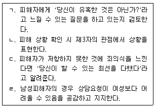
- ㄱ, ㄴ
- ㄱ, ㄹ
- ㄴ, ㄷ
- ㄱ, ㄷ, ㄹ
- ㄴ, ㄷ, ㄹ
(정답률: 알수없음)
35. 성행동과 성반응에 관한 설명으로 옳은 것은?
- 캐플란(H. Kaplan)의 성반응 모델은 생리학적 모델이다.
- 마스터스와 존슨(W. Masters & V. Johnson)의 성반응 주기는 흥분 - 안정 - 고조 - 오르가슴의 4단계이다.
- 성행동은 종교적인 영향이 강하기 때문에 정상행위의 범위가 다양하지 않다.
- 오감 중 사람의 성욕에 가장 큰 영향을 미치는 것은 후각이다.
- 정상 성행동은 개인이 속한 문화의 성적 기준에 따라 형성된다.
(정답률: 알수없음)
36. 사춘기에 관한 설명으로 옳지 않은 것은?
- 생식기관과 성기가 성숙하는 이차 성징 출현
- 남자청소년보다 여자청소년에서 일찍 시작됨
- 발생 시기에는 개인차가 있지만 발달의 순서는 일정함
- 또래보다 이른 사춘기의 영향에는 성차가 있음
- 사춘기 시작 연령이 점차 낮아지는 추세임
(정답률: 알수없음)
37. 첫 회기 상담에서 ( )에 들어갈 상담자 반응과 개입의도가 적절한 것은?
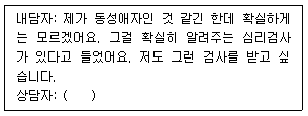
- 호소문제 파악: 자신이 동성애자인지 아닌지 혼란스러운 모양이군요. 그 혼란스러움에 대해 좀 더 이야기해 주시겠어요?
- 정보수집: 자신이 동성애자인 것 같다고 느끼는군요. 어떤 것을 보고 그렇게 생각하는지 말씀해 주시겠어요?
- 상담에 대한 기대 평가: 제가 알기로 현재 그런 검사는 없습니다. 어디서 그런 검사에 대해알게 되었습니까?
- 상담 구조화: 자기 느낌을 확인받고 싶군요. 심리검사 결과만으로 확인될 수 있을까요?
- 상담 동기 평가: 자기가 동성애자라고 느낀 것은 언제부터였지요?
(정답률: 알수없음)
38. 다음은 베스(E. Bass)와 데이비스(L. Davis)의 성폭력피해상담 치유단계 중 어느 단계인가?
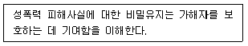
- 성폭력이 일어났음을 믿기
- 침묵 깨기
- 드러내기와 직면하기
- 내면 아이와 만나기
- 자신을 신뢰하기
(정답률: 알수없음)
39. 다음의 현상을 설명하는 이론은?
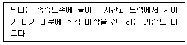
- 사회교환이론
- 부모투자이론
- 친자확률이론
- 성사회화이론
- 투자균형이론
(정답률: 알수없음)
40. 성과 관련된 용어에 관한 설명으로 옳지 않은 것은?
- 섹스(sex): 종족보존, 쾌락추구에 국한된 의미
- 섹슈얼리티(sexuality): 성행동과 관련된 심리적ㆍ문화적 요소를 포괄
- 색(色): 성적 쾌락 및 그와 관련된 성행동을 의미
- 젠더(gender): 사회ㆍ문화적 환경에서 학습된 남녀의 특성을 의미
- 성학(sexology): 성을 연구하는 학문영역
(정답률: 알수없음)
41. 사춘기 성 발달에 관한 설명으로 옳지 않은 것은?
- 여자: 성숙하는 소음순 모양 때문에 자기 성기에 이상이 있다고 오해하기도 함
- 남자: 원하지 않아도 발기하여 당황스러울 수 있음
- 여자: 여성호르몬 분비로 이성에 대한 관심이 높아짐
- 남자: 남성호르몬 분비로 변성이 일어남
- 남자, 여자: 높아진 성적욕구를 자위행위로 충족시키기도 함
(정답률: 알수없음)
42. 청소년의 동성애에 관한 설명으로 옳지 않은 것은?
- 성적 지향성에 상관없이 성행동 선택권을 인정해야 한다.
- 동성에 대한 성적 감정을 느낄 수 있지만, 소수만이 동성애자이다.
- 동성애는 성적 지향성에 관한 것이다.
- 동성애로 고민할 때 상담을 통해 성적 지향성을 바꾸도록 한다.
- 성적 지향성에 혼란을 느낄 때 부모 및 주변사람들의 정서적 지지가 필요하다.
(정답률: 알수없음)
43. 청소년 성과 대중매체의 관계에 관한 설명으로 옳지 않은 것은?
- 인터넷의 보급으로 청소년의 성욕구 충족이 쉬워졌다.
- 인터넷을 통한 음란물 접촉, 성매매 등이 증가했다.
- 매체가 제공하는 성적 이미지들은 성 정보원의 역할을 한다.
- 인터넷의 접근용이성, 익명성은 성 정보 탐색, 치료 서비스 접근성을 높인다.
- 청소년들은 드라마나 영화가 현실과 다름을 알기 때문에 매체의 영향을 받지 않는다.
(정답률: 알수없음)
44. 모자보건법상 인공임신중절수술이 가능한 경우가 아닌 것은?
- 본인이 낭성 섬유종이 있는 경우
- 배우자가 풍진이 있는 경우
- 강간에 의하여 임신된 경우
- 혼인관계에 있는 배우자가 원하는 경우
- 법률상 혼인할 수 없는 인척간에 임신된 경우
(정답률: 알수없음)
45. 사이버 성폭력에 관한 설명으로 옳지 않은 것은?
- 즉시성, 폐쇄성, 익명성, 비신체성의 특성을 보인다.
- 사이버공간을 매개로 한 성적 침해행위이다.
- 불특정 다수를 대상으로 한다.
- 익명성으로 인해 대담한 표현의 성희롱, 폭언 등을 한다.
- 남성 중심의 성문화 영향인 여성 억압, 성폭력 문제와 맥락을 같이 한다.
(정답률: 알수없음)
46. 다음에서 설명하는 이상 성행동은?
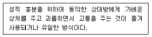
- 성적 가학증
- 성적 피학증
- 소아 기호증
- 물품 음란증
- 마찰 도착증
(정답률: 알수없음)
47. 피임법에 관한 설명으로 옳은 것을 모두 고른 것은?
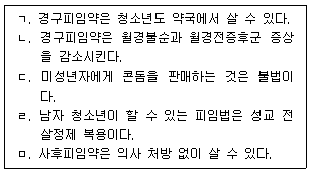
- ㄱ, ㄴ
- ㄷ, ㄹ
- ㄱ, ㄴ, ㅁ
- ㄷ, ㄹ, ㅁ
- ㄱ, ㄴ, ㄷ, ㅁ
(정답률: 알수없음)
48. ( )에 들어갈 생화학물질명을 옳게 나열한 것은?
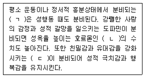
- ㄱ: 엔도르핀, ㄴ: 세로토닌, ㄷ: 옥시토신
- ㄱ: 엔도르핀, ㄴ: 안드로겐, ㄷ: 페로몬
- ㄱ: 노르에피네프린, ㄴ: 세로토닌, ㄷ: 페로몬
- ㄱ: 노르에피네프린, ㄴ: 테스토스테론, ㄷ: 옥시토신
- ㄱ: 노르에피네프린, ㄴ: 엔도르핀, ㄷ: 바소프레신
(정답률: 알수없음)
49. 청소년의 데이트와 성행동에 관한 설명으로 옳지 않은 것은?
- 데이트는 청소년에게도 친밀감을 형성하는 주요 수단이다.
- 데이트에는 일정한 단계가 있고 각 단계마다 고유한 성행동이 있다.
- 데이트 발전단계가 높아질수록 적절한 성행동에 대한 태도에서 성차가 줄어든다.
- 청소년들의 데이트에도 데이트성폭력의 위험이 있다.
- 데이트의 진행 속도는 개인과 시대에 따라 차이가 있다.
(정답률: 알수없음)
50. 성역할 획득에 관한 이론과 설명의 연결로 옳지 않은 것은?
- 정신분석학: 내적 갈등 해소를 위해 동성부모를 동일시한다.
- 인지발달 이론: 인지 능력의 일정한 발달 단계에서 성차와 적절한 성역할을 인식한다.
- 성 도식 이론: 남녀 각각의 성 도식이 생득적으로 주어져 있다.
- 사회학습이론: 사회환경은 남녀 각각에 기대하는 성역할을 강화한다.
- 진화심리학: 남녀 생식기제의 생물학적 차이 때문에 성적 전략, 역할에 차이가 생긴다.
(정답률: 알수없음)
3과목: 약물상담
51. 중독자 가족 상담에서 치료 중기에 다루어야 할 내용으로 옳은 것은?
- 중독에 의해 손상된 가족기능의 회복
- 변화하고자 하는 중독자에 대한 정서적 지지
- 중독자가 회복되었을 때의 이득 따져보기
- 중독자 가족원들의 웰빙이나 삶의 질 개선
- 중독자 가족원에게 영향을 주어 생길 수 있는 스트레스 관련 장애에 대한 이해
(정답률: 알수없음)
52. 중추신경 흥분제로 작용하는 약물로 짝지어진 것은?
- 암페타민, 카페인, 코카인
- 메사돈, 아세톤, 코카인
- 카페인, 코카인, 헤로인
- 마리화나, 암페타민, 톨루엔
- 아세톤, 메사돈, 헤로인
(정답률: 알수없음)
53. 동기강화상담에서 반영적 경청 중 다음에 해당하는 상담자의 기술은?
- 단순반영
- 확대반영
- 양면반영
- 방향틀어 동의하기
- 관점 재구조화하기
(정답률: 알수없음)
54. 다음에서 설명하는 모델은?
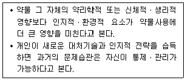
- 사회학습모델
- 도덕ㆍ의지모델
- 성격모델
- 질병모델
- 공중보건모델
(정답률: 알수없음)
55. 암페타민제제의 급성효과로 옳지 않은 것은?
- 호흡과 심박률 증가
- 고체온증과 혈압 저하
- 에너지 상승
- 주의집중력 증가
- 식욕 감소
(정답률: 알수없음)
56. 미국중독의학회(ASAM)가 제시한 문제성 음주자에 대한 연계체계인 ‘적정수준 배치기준(PPC)’이 갖추어야 할 기본 특성으로 옳지 않은 것은?
- 내담자의 상태 혹은 진단에 따라 사전에 계획된 순서와 내용으로 치료가 진행
- 개별화된 치료계획 수립
- 서비스에 대한 즉각적인 접근 가능성
- 다양한 치료 방식 요구에 대한 인지
- 치료 계획에 대한 지속적인 재평가와 수정
(정답률: 알수없음)
57. 약물사용자에 대한 인지치료에서 인지적 기법에 해당하지 않는 것은?
- 이익-불이익 분석
- 연속된 유도 질문법
- 이미지 상상
- 약물에 관한 믿음의 규명과 조정
- 점진적 과제수행
(정답률: 알수없음)
58. 중독상담에서 내담자의 비밀보장에 대한 예외 상황에 해당하지 않는 것은?
- 정보 공개에 대한 내담자의 유효한 서면동의
- 내담자의 아동학대 보고
- 내담자가 자신이나 타인들에게 가할 수 있는 긴박한 위험
- 치료 서비스를 제공하는 치료기관들 간의 정보 공개
- 의료적 응급 상황
(정답률: 알수없음)
59. 남용할 경우에 다음의 특징을 보이는 약물은?
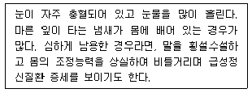
- 흡입제
- 필로폰
- 대마초
- 본드
- 코카인
(정답률: 알수없음)
60. 중독과 관련된 개념의 설명으로 옳지 않은 것은?
- 내성은 같은 양의 약물에 반복적으로 노출되면 약효가 감소하는 현상을 말한다.
- 신체적 의존성은 약물을 중단하였을 때 해당 약물에 특징적인 금단증상이 나타나는 상태를 말한다.
- 강박적 사용은 약물사용으로 인한 문제가 반복적으로 발생함에도 불구하고 해당 약물을 지속적으로 사용하는 것을 말한다.
- 공동의존은 약물구조나 작용이 비슷한 두 가지 약물 중에 한 가지의 약물에 내성이 생긴 경우, 다른 한 가지의 약물을 투여했을 때 동일한 효과가 나타나는 것을 말한다.
- 부정은 약물 중독자가 자신의 중독 사실을 인정하지 않으려하는 것을 말한다.
(정답률: 알수없음)
61. 청소년 약물남용 예방 프로그램인 ‘청소년 과도기 프로그램(ATP)’의 내용으로 옳지 않은 것은?
- 미국 국립약물남용연구원(NIDA)의 기금으로 학교 교직원과 행정가에 의해 운영된다.
- 긍정적 또래영향 인식 프로그램을 운영한다.
- 도서실과 상담실을 포함하는 일명 가정지원실을 필요로 한다.
- 상담 서비스는 학교 혹은 가정방문을 통해 학생과 그 가족에게 제공한다.
- 부모에게 자녀 양육 및 가정관리 훈련과 약물오남용에 대한 교육을 실시한다.
(정답률: 알수없음)
62. 약물남용으로 발생할 수 있는 주요 합병증과의 연결로 옳은 것을 모두 고른 것은?
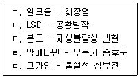
- ㄱ, ㄴ
- ㄱ, ㄷ
- ㄴ, ㄷ, ㄹ
- ㄴ, ㄷ, ㅁ
- ㄱ, ㄴ, ㄷ, ㅁ
(정답률: 알수없음)
63. 약물중독의 원인에 대한 이론과 설명의 연결로 옳지 않은 것은?
- 가족상담이론: 가족 안의 관계나 구조의 문제
- 정신분석이론: 성격 구성요소 간의 갈등에 따른 특정 방어기제의 작동
- 신경생물학이론: 신경전달물질의 작용
- 인지행동이론: 자신이나 타인을 통합적 관점에서 바라볼 수 있는 능력의 결함
- 하위문화이론: 특정 사회집단과의 접촉
(정답률: 알수없음)
64. 청소년의 약물의존 특성에 관한 설명으로 옳은 것을 모두 고른 것은?
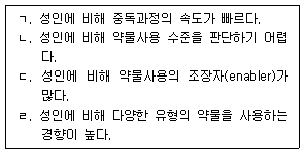
- ㄱ, ㄴ
- ㄱ, ㄷ
- ㄴ, ㄷ
- ㄴ, ㄷ, ㄹ
- ㄱ, ㄴ, ㄷ, ㄹ
(정답률: 알수없음)
65. 청소년의 중독 촉진요인을 모두 고른 것은?
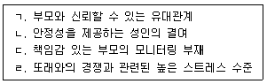
- ㄱ, ㄴ
- ㄱ, ㄷ
- ㄴ, ㄷ
- ㄴ, ㄷ, ㄹ
- ㄱ, ㄴ, ㄷ, ㄹ
(정답률: 알수없음)
66. 공존장애(co-occurring disorders)에 관한 설명으로 옳은 것은?
- 남용에 더해서 의존성을 발달시킨 경우이다.
- 중독자 자녀들의 공통적인 행동 및 성향을 의미한다.
- 중독장애와 그 이외의 정신건강장애가 함께 나타나는 경우이다.
- 다양한 약물사용으로 인한 퇴약증후를 의미한다.
- 약물의 중단으로 발생하는 신체의존성을 의미한다.
(정답률: 알수없음)
67. 다음 약물사용 청소년의 사회적 상호작용 변화를 목표로 하는 상담은?
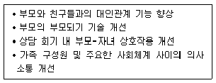
- 해결중심단기치료
- 다차원적 가족상담
- 동기강화 상담
- 수용전념치료
- 영성상담
(정답률: 알수없음)
68. 임신 기간 중 알코올 남용을 평가하기 위한 도구로 짝지어진 것은?
- TWEAK, T-ACE
- AUDIT, CAGE
- MAST, CAST-K
- POSIT, KA.A.PI.
- DAST, TWEAK
(정답률: 알수없음)
69. 목슬리(D. Moxley)가 제시한 중독재활 사례관리 과정 중 평가 내용으로 옳지 않은 것은?
- 대상자에 대한 지원 계획이 가치가 있는가에 대한 평가
- 목표 달성에 대한 평가
- 서비스의 전반적인 효과성에 대한 평가
- 대상자 만족에 대한 평가
- 대상자의 요구에 맞춘 서비스를 제공하는가에 대한 평가
(정답률: 알수없음)
70. 메사돈과 메사돈 유지 프로그램에 관한 설명으로 옳지 않은 것은?
- 메사돈은 그 효과가 대략 24시간 동안 지속된다.
- 메사돈은 헤로인에 대한 갈망을 방지하면서도 서서히 작용하기 때문에 헤로인이 주는 다행감은 일으키지 않는다.
- 메사돈 유지 프로그램의 참여자들은 매일 치료센터로 와서 주사할 메사돈을 받는다.
- 메사돈 유지 프로그램의 전반적 원리는 헤로인 남용을 일종의 신진대사 장애로 보고 신체에 유지약물이 필요하다고 보는 것이다.
- 메사돈 유지 프로그램은 헤로인 구입과 관련된 범죄예방에 기여할 수 있다.
(정답률: 알수없음)
71. THC에 관한 설명으로 옳은 것을 모두 고른 것은?
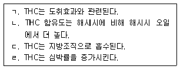
- ㄱ, ㄴ
- ㄱ, ㄷ
- ㄴ, ㄷ
- ㄴ, ㄷ, ㄹ
- ㄱ, ㄴ, ㄷ, ㄹ
(정답률: 알수없음)
72. 약물남용 관련 현행 법과 제도에 관한 설명으로 옳지 않은 것은?
- 마약류란 마약ㆍ향정신성 의약품 및 대마를 말한다.
- 여성가족부장관은 청소년 환각물질 중독 전문 치료기관을 지정ㆍ운영할 수 있다.
- 마약류 중독자로 판명된 사람에 대한 치료보호 기간은 12개월 이내로 한다.
- 식품의약품안전처장은 마약류 중독자에 대한 실태조사를 5년마다 할 수 있다.
- 마약류 중독 여부의 판별검사 기간은 1개월 이내로 한다.
(정답률: 알수없음)
73. 다음 사례는 동기강화상담의 변화단계 모형 중 어느 단계에 해당하는가?
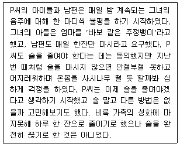
- 전숙고단계
- 숙고단계
- 준비단계
- 변화의 실행단계
- 변화의 유지단계
(정답률: 알수없음)
74. 알코올 중독자 가족 대상 공식적 12단계 상담으로 중독자의 배우자를 위한 자조모임은?
- AA
- Alateen
- Al-Anon
- ACOA
- Nar-Anon
(정답률: 알수없음)
75. 청소년 약물예방을 위한 개입방법 중 학교에서 실행가능한 2차 예방프로그램이 아닌 것은?
- 단기가족상담 프로그램
- 지역사회 연계 서비스 프로그램
- 교육집단상담 프로그램
- 사회기술증진 프로그램
- 재발 예방프로그램
(정답률: 알수없음)
4과목: 위기상담
76. 청소년 위기의 위험요인으로 볼 수 없는 것은?
- 부모의 애정과 관심 부족
- 엄격한 훈육, 신체처벌
- 부모의 권위 있는 양육태도
- 폭력에 대한 부모의 허용적 가치관
- 부모의 범죄성향
(정답률: 알수없음)
77. 다음에서 설명하는 학교폭력 이론은?
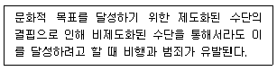
- 긴장이론적 관점
- 모멸극복적 관점
- 생태학적 관점
- 사회통제적 관점
- 학습이론적 관점
(정답률: 알수없음)
78. 다음에서 설명하는 상황은 무엇인가?
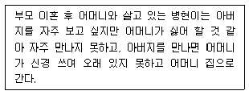
- 삼각관계
- 충성심 갈등
- 희생양
- 부모화
- 이중구속
(정답률: 알수없음)
79. 학교폭력 예방 및 대책에 관한 법령상 학교폭력 가해학생과 피해학생에 대한 조치로 옳지 않은 것은?
- 가해학생이 전학할 학교를 배정할 때 피해학생의 보호에 충분한 거리를 고려해야 한다.
- 학교의 장은 피해학생의 보호를 위한 조치를 14일 이내에 하여야 한다.
- 가해학생이라도 의무교육을 받고 있는 학생은 퇴학시킬 수 없다.
- 가해학생과 피해학생이 상급학교에 진학할 때 각각 다른 학교에 배정한다.
- 피해학생이 전문단체나 전문가로부터 받는 심리상담 비용은 가해학생의 보호자가 부담해야한다.
(정답률: 알수없음)
80. 다음에서 설명하는 이론은?
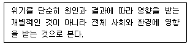
- 대인이론
- 적응이론
- 정신분석이론
- 체계이론
- 혼돈이론
(정답률: 알수없음)
81. 위기의 진행과정을 옳게 나열한 것은?
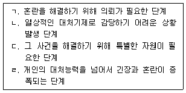
- ㄱ → ㄷ → ㄹ → ㄴ
- ㄴ → ㄷ → ㄱ → ㄹ
- ㄴ → ㄹ → ㄷ → ㄱ
- ㄷ → ㄱ → ㄹ → ㄴ
- ㄹ → ㄱ → ㄴ → ㄷ
(정답률: 알수없음)
82. 청소년 스마트폰 중독에 관한 설명으로 옳지 않은 것은?
- 일상생활에서 기억해야 할 것이 생각나지 않는 팝콘 브레인(popcorn brain) 현상이 생긴다.
- 거북목 증후군으로 인해 목과 등에 통증을 일으킨다.
- 스마트폰 자극에는 즉각적인 반응을 하지만 현실상황에는 무감각, 무기력해지는 현상이 나타난다.
- 스마트폰 중독 청소년이 국립청소년인터넷드림마을의 프로그램을 이수한 후에는 청소년동반자(YC)가 추수상담을 한다.
- 스마트폰 중독도 약물중독과 유사한 신경생리학적 보상체계가 작동한다.
(정답률: 알수없음)
83. 학교폭력 관련자들에 관한 설명으로 옳지 않은 것은?
- 학교폭력 주변인(bystander) 교육을 통해 학교폭력을 줄일 수 있다.
- 자기와 관련된 피해의식은 가해자의 위험요인이다.
- 가정의 기능적인 결손은 가해자의 위험 요인이다.
- 부모의 수용적인 양육태도는 자녀의 학교폭력과 관련이 없다.
- 가해자 및 피해자 모두에게 스트레스 및 불안관리능력증진을 위한 교육이나 상담이 필요하다.
(정답률: 알수없음)
84. ( )에 들어갈 내용을 옳게 나열한 것은?
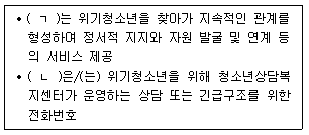
- ㄱ: 청소년상담사, ㄴ: 1366
- ㄱ: 청소년지도사, ㄴ: 110
- ㄱ: 청소년동반자, ㄴ: 1388
- ㄱ: 전문상담사, ㄴ: 1365
- ㄱ: 상담심리사, ㄴ: 117
(정답률: 알수없음)
85. 위기상담의 특징에 해당하지 않는 것은?
- 사례개념화에 필요한 충분한 시간이 없다.
- 일반적으로 특정하게 제시된 위기에서 시작된다.
- 내담자가 사용할 수 있는 이전의 대처기술과 환경자원을 신속하게 파악한다.
- 피드백과 사정은 전형적으로 지금-여기를 기반으로 한다.
- 내담자의 생각, 느낌, 행동양식의 변화를 추구한다.
(정답률: 알수없음)
86. 발달과정상의 위기에 해당하지 않는 것은?
- 직업선택
- 신체적인 병
- 중년의 위기
- 결혼에의 적응
- 배우자 사망
(정답률: 알수없음)
87. 월러스타인(J. Wallerstein)이 제시한 이혼가정의 자녀가 감당해야 할 과제가 아닌 것은?
- 가정이 파괴되었다는 현실을 받아들일 필요가 있다.
- 이혼이 바뀔 수 없다는 것을 인정하고 스스로 부모역할을 해야 한다.
- 분노나 죄책감 같은 정서적 문제를 해결하고 부모를 용서할 수 있어야 한다.
- 사랑을 주고받는 능력, 인간관계에 대한 현실적인 기대를 가져야 한다.
- 가족이 해체되거나 변화하는 것에 대처할 힘을 길러야 한다.
(정답률: 알수없음)
88. 자살이론에 관한 설명으로 옳은 것을 모두 고른 것은?
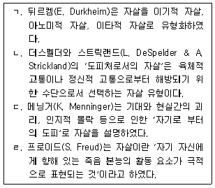
- ㄱ, ㄴ
- ㄱ, ㄷ
- ㄴ, ㄷ, ㄹ
- ㄱ, ㄴ, ㄹ
- ㄱ, ㄴ, ㄷ, ㄹ
(정답률: 알수없음)
89. 헤르만(J. Herman)의 재난위기 상담에서 2단계에 해당하지 않는 것은?
- 신체자각과 마음챙김
- 안전지대 선정
- 안정화 각성상태의 조절
- 인지재구조화
- 애도반응
(정답률: 알수없음)
90. 길리랜드(B. Gilliland)의 위기상담 모든 단계에서 지속적으로 고려해야 할 사항은?
- 안전확보
- 문제정의
- 참여유도
- 대안탐색
- 계획세우기
(정답률: 알수없음)
91. DSM-5에 분류된 외상후 스트레스장애(PTSD)에 관한 설명으로 옳은 것을 모두 고른 것은?
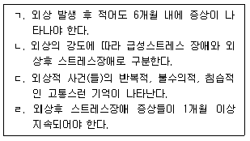
- ㄱ, ㄴ
- ㄷ, ㄹ
- ㄱ, ㄷ, ㄹ
- ㄴ, ㄷ, ㄹ
- ㄱ, ㄴ, ㄷ, ㄹ
(정답률: 알수없음)
92. 집단 폭력에 관한 상담 전략으로 옳지 않은 것은?
- 피해학생이 보복당할 것을 두려워하지 않을 수 있는 신고체계를 갖추도록 한다.
- 가해학생에게 집단 폭력에 대한 처벌과 법적 제재를 자세히 안내한다.
- 집단 폭력 가해학생의 인격을 존중한다.
- 피해학생의 두려움과 분노를 다룬다.
- 외부 폭력 세력과 연결되어 있는 경우 경찰에 인계하고 학교에서는 다루지 않는다.
(정답률: 알수없음)
93. 청소년 자살에 관한 설명으로 옳지 않은 것은?
- 자살생각은 실제적 자살의 중요한 예측 지표이다.
- 자살생각이나 자살시도가 사망으로 이어지는 비율은 성인에 비해 높지 않다.
- 우울은 자살과 밀접한 상관을 가지고 있다.
- 가족력은 자살시도의 위험 요소이다.
- DSM-5의 진단기준에 따르면 자살행동은 정신질환이다.
(정답률: 알수없음)
94. 자살의도가 없는 자해(Nonsuicidal Self-inflicted Injury: NSSI)에 관한 설명으로 옳지 않은 것은?
- 만성적이고 반복적으로 일어난다.
- 치명성이 다소 낮은 수준이더라도 영구적인 손상이나 죽음을 야기할 수 있다.
- 치명성이 낮을 뿐 자살시도 청소년과 같은 방법을 사용한다.
- 유전적ㆍ심리적ㆍ사회적 변인과 관계가 있는 복잡한 행동이다.
- 부정적 정서를 경감시키고 자신의 삶을 살만한 상태로 만들려는 의도의 표현이다.
(정답률: 알수없음)
95. 위기개입 수단으로서 전화상담의 특징에 해당하는 것을 모두 고른 것은?
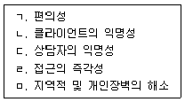
- ㄱ, ㄹ
- ㄱ, ㄴ, ㄷ
- ㄴ, ㄷ, ㄹ
- ㄱ, ㄴ, ㄹ, ㅁ
- ㄱ, ㄴ, ㄷ, ㄹ, ㅁ
(정답률: 알수없음)
96. 스그로이(S. Sgroi), 포터(F. Porter) 그리고 블릭(L. Blick)이 제시한 아동성학대의 단계를 옳게 나열한 것은?
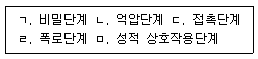
- ㄱ → ㄴ → ㄷ → ㄹ → ㅁ
- ㄱ → ㄷ → ㅁ → ㄴ → ㄹ
- ㄷ → ㅁ → ㄱ → ㄴ → ㄹ
- ㄷ → ㅁ → ㄱ → ㄹ → ㄴ
- ㅁ → ㄴ → ㄱ → ㄹ → ㄷ
(정답률: 알수없음)
97. 자살에 대한 학교 현장에서의 후속 조치로 옳지 않은 것은?
- 학생의 죽음을 공공시스템 혹은 학내방송을 통해 간단히 알린다.
- 죽은 학생이나 자살 사건을 미화하거나 낭만적으로 묘사하거나 영웅시하지 않는다.
- 학교 내에서 추도식을 하거나 휴강 혹은 휴교하지 않는다.
- 자살의 자세한 상황에 대한 이야기를 최소화한다.
- 학생들이 자살긴급전화에 대해 알고 있는지 확인한다.
(정답률: 알수없음)
98. 다음에서 설명하는 재난사건에 대한 심리지원 개입 방법은?
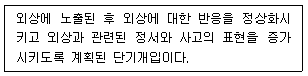
- 안구운동 민감소실 및 재처리요법
- 심리적 응급처치
- 인지 행동적 접근
- 지속적 노출법
- 심리적 디브리핑
(정답률: 알수없음)
99. 학업중단 청소년들이 학교 밖 청소년 지원센터를 통해 제공받을 수 있는 서비스가 아닌 것은?
- 상담지원
- 건강검진
- 대학입시설명회
- 돌봄교실
- 직업체험
(정답률: 알수없음)
100. 맥위터(J. McWhirter) 등이 분류한 청소년의 5단계 위기수준 중 다음에 해당하는 단계는?
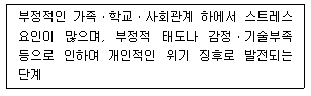
- 최저위기
- 저위기
- 고위기
- 위기행동 입문
- 위기행동
(정답률: 알수없음)